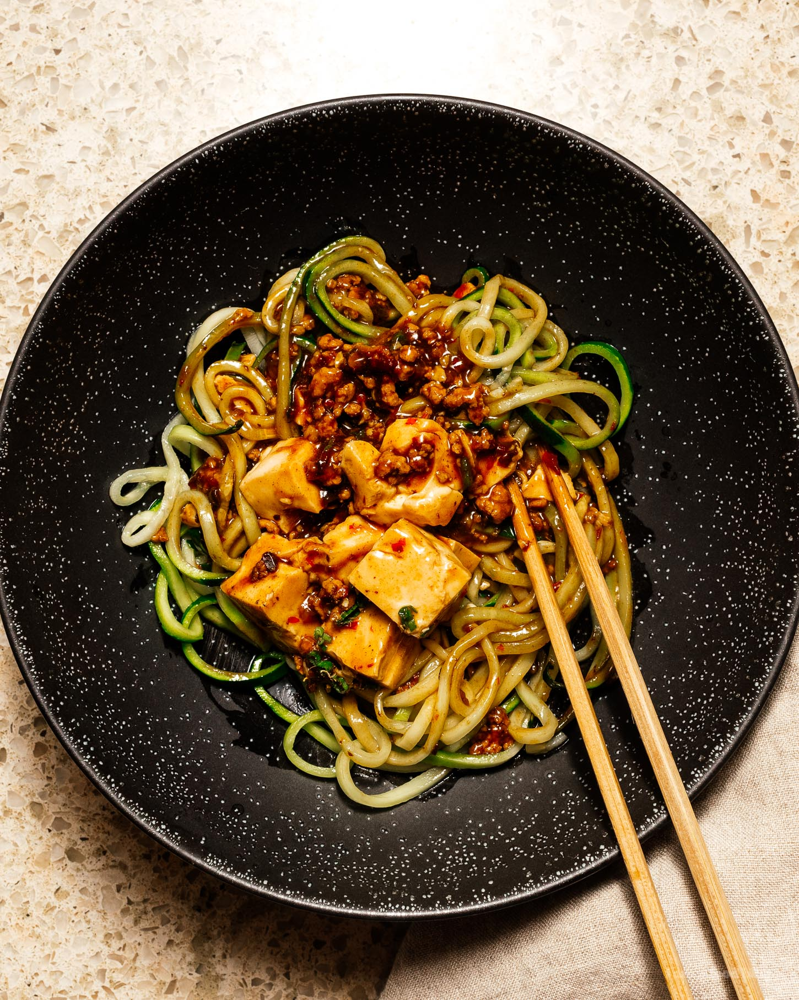

Mapo Tofu

Description
Spicy hot like Vegeta's temper.
Ingredients
- 14 oz soft tofu 1 block
- 1 tbsp oil
- 1/4 lb ground pork
- 1.5 tbsp doubanjiang chopped
- 2 cloves garlic minced
- 2 tsp ginger grated or finely chopped
- 1 cup chicken stock sodium free/unsalted preferred
- 1 tbsp soy sauce
- 1 tbsp cornstarch whisked into 2 tbsp water
- 1/2 tsp ground sichuan pepper or to taste
- green onions thinly sliced, to finish
Directions
- Cut the tofu into small cubes and set aside. Bring a pot of water to a boil and add a pinch of salt. Turn the heat down to a simmer then add the tofu and cook for 2 minutes. Remove from the heat and let soak in the salted water while you prepare the rest of the dish.
- In a wok, heat up the oil over medium heat. Add the pork and cook, breaking up, until the fat renders out and the pork is cooked through. Turn down the heat and add the doubanjiang and cook, stirring, until the oils release from the doubanjiang and everything looks bright red.
- Stir in the garlic and ginger and cook for 1 minute. Add the stock and soy sauce and bring the heat up so everything comes up to a simmer.
- Drain the tofu and add it to the wok, pushing it around gently so you don’t break it. Stir in the cornstarch slurry and bring up to a gentle simmer, until the sauce is thick and glossy, about 1 minute.
- Turn off the heat and scoop the tofu with sauce into a serving dish. Finish with a sprinkle of ground Sichuan peppercorn and sliced green onions.
Back to Recipes